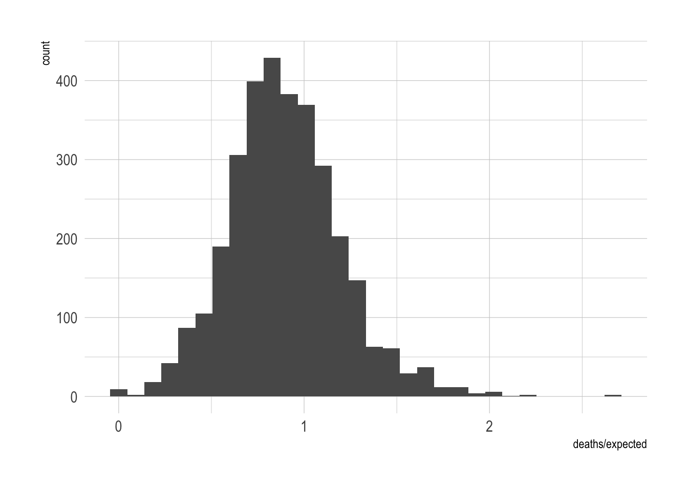
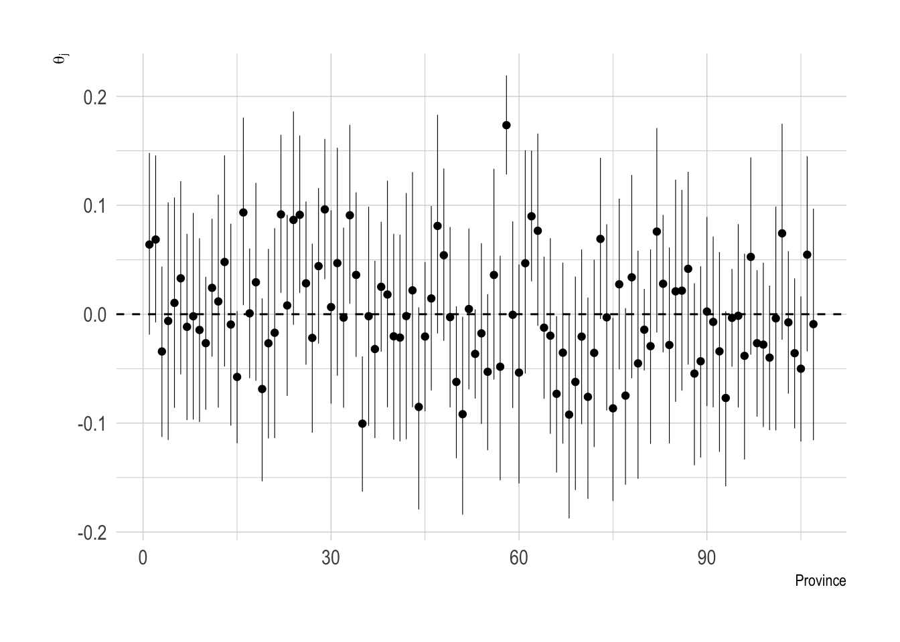
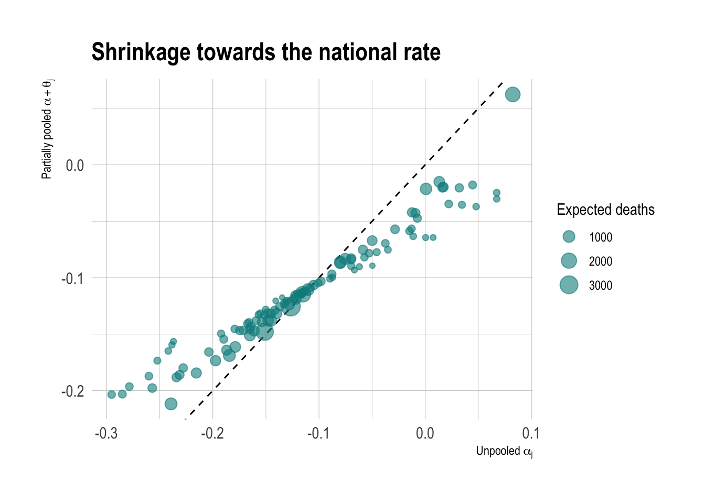
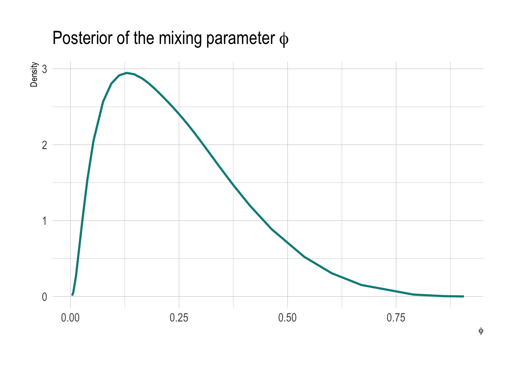
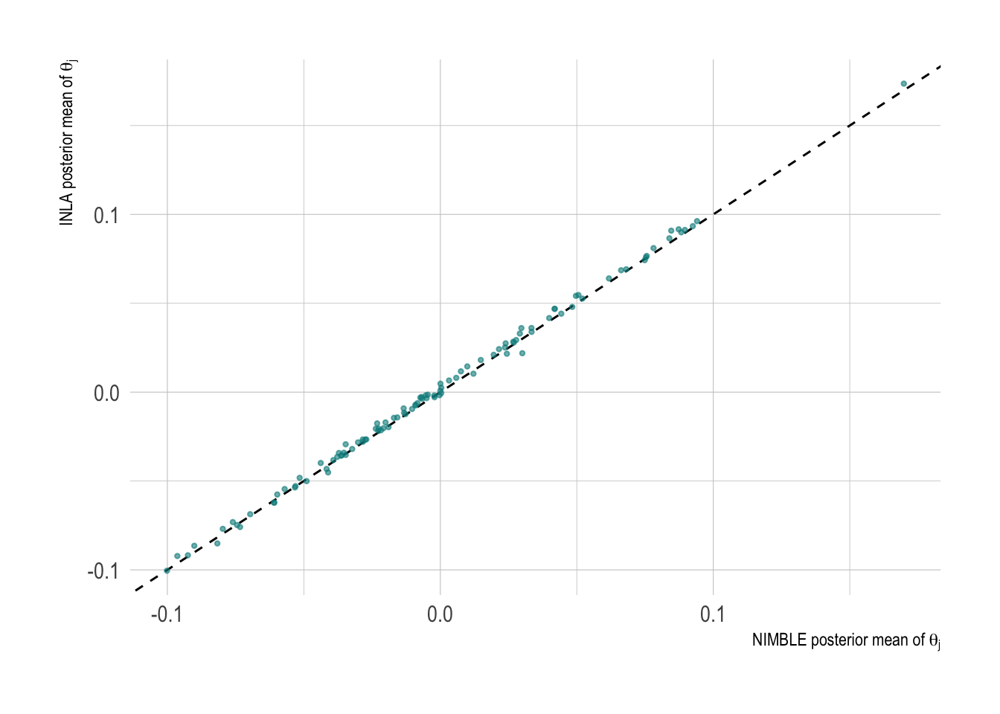

SHARP Bayesian Modeling for Environmental Health Workshop
Author
Robbie M. Parks
Published
August 6, 2026
Goal of this computing lab session
The goal of this lab is to fit the pooling models from the hierarchical modelling session using R-INLA instead of NIMBLE, comparing speed and results between the two approaches, and covering some practical details specific to INLA (priors on precisions, working with posterior marginals).
What’s going to happen in this lab session?
During this lab session, we will:
Refit the full pooling, no pooling and partial pooling models for the Italian mortality data in INLA;
Compare estimates and runtimes against the NIMBLE output from the hierarchical modelling session;
Transform posterior marginals of precisions into interpretable standard deviations;
Explore how sensitive the results are to the prior on the variance component; and
Extend the model to a spatially structured bym2 specification.
Introduction
In the hierarchical modelling session we estimated the standardised mortality ratio (SMR) for the provinces of Italy in September 2018 using three models — full pooling, no pooling and partial pooling — fitted with MCMC in NIMBLE. That workflow required initial values, burn-in, convergence checks, trace plots and \(\hat{R}\).
All three of those models are latent Gaussian models: a Poisson likelihood, a Gaussian latent field (the intercept, fixed effects and IID province effects), and at most one hyperparameter (the precision of the province effects). That means we can fit them with INLA, which replaces sampling with a deterministic approximation to the posterior marginals, so no convergence diagnostics are needed and results are reproducible without setting a seed.
INLA is not on CRAN. If you have not installed it yet:
NOME_PROVINCIA SIGLA date deaths
Length:96300 Length:96300 Min. :2013-05-04 Min. : 0.00
Class :character Class :character 1st Qu.:2014-07-17 1st Qu.: 7.00
Mode :character Mode :character Median :2016-01-16 Median : 11.00
Mean :2016-01-16 Mean : 14.93
3rd Qu.:2017-07-17 3rd Qu.: 17.00
Max. :2018-09-30 Max. :272.00
year expected hol month
Min. :2013 Min. : 2.909 Min. :0.00000 Min. :5.000
1st Qu.:2014 1st Qu.: 8.231 1st Qu.:0.00000 1st Qu.:6.000
Median :2016 Median : 11.674 Median :0.00000 Median :7.000
Mean :2016 Mean : 16.223 Mean :0.01333 Mean :7.033
3rd Qu.:2017 3rd Qu.: 18.153 3rd Qu.:0.00000 3rd Qu.:8.000
Max. :2018 Max. :118.261 Max. :1.00000 Max. :9.000
temperature_lag0_3 relativehumidity_lag0_3 o3_lag0_3 pm10_lag0_3
Min. :-2.582 Min. :24.01 Min. : 1.00 Min. : 2.917
1st Qu.:17.029 1st Qu.:63.92 1st Qu.: 96.06 1st Qu.:14.375
Median :20.380 Median :71.47 Median :108.38 Median :18.333
Mean :19.996 Mean :70.76 Mean :111.35 Mean :19.200
3rd Qu.:23.346 3rd Qu.:78.49 3rd Qu.:123.50 3rd Qu.:22.875
Max. :32.962 Max. :96.78 Max. :257.50 Max. :92.226
week
Min. :18.0
1st Qu.:23.0
Median :29.0
Mean :28.8
3rd Qu.:34.0
Max. :40.0
As in the hierarchical modelling lab, we collapse the time dimension and focus on September 2018.
data <- data |>mutate(provincia_id = data |>group_by(SIGLA) |>group_indices()) |>filter(year ==2018) |>filter(month ==9) |>arrange(SIGLA)
And load the shapefile for mapping (and, later, for the adjacency structure).
data |>ggplot(aes(x = deaths / expected)) +geom_histogram()
`stat_bin()` using `bins = 30`. Pick better value `binwidth`.

Full pooling model
The model is the same as before:
Priors \[
\alpha \sim N(0, 5)
\]
Likelihood \[
\begin{split}
y_i &\sim \text{Pois}(\mu_i) \quad i = 1,..., N \\
\log(\mu_i) &= \log(E_i) + \alpha
\end{split}
\]
In INLA this is one call. Some things to notice compared to the NIMBLE version:
The offset goes in through E =, on the natural scale (not logged) — INLA takes the log for us.
There is no f() term, so the hyperparameter vector \(\boldsymbol{\theta}\) is empty.
We match the \(N(0, 5)\) prior on \(\alpha\) via control.fixed — remember INLA parameterises Gaussians by precision, so \(\text{sd} = 5\) becomes \(\text{prec} = 1/25 = 0.04\).
We ask for DIC, WAIC and CPO up front so we can compare models later.
Time used:
Pre = 1.05, Running = 0.201, Post = 0.0127, Total = 1.26
Fixed effects:
mean sd 0.025quant 0.5quant 0.975quant mode kld
(Intercept) -0.109 0.005 -0.118 -0.109 -0.1 -0.109 0
Deviance Information Criterion (DIC) ...............: 17275.76
Deviance Information Criterion (DIC, saturated) ....: 3717.83
Effective number of parameters .....................: 1.00
Watanabe-Akaike information criterion (WAIC) ...: 17275.99
Effective number of parameters .................: 1.23
Marginal log-Likelihood: -8643.87
CPO, PIT is computed
Posterior summaries for the linear predictor and the fitted values are computed
(Posterior marginals needs also 'control.compute=list(return.marginals.predictor=TRUE)')
Note there are no initial values, iteration counts or burn-in settings to specify. The fixed-effect summary gives us the posterior of \(\alpha\) directly:
The kld column is the Kullback-Leibler divergence between the Gaussian and the simplified Laplace marginal for that parameter. Values much above \(\sim 0.01\) suggest the approximation is straining. Here it should be essentially zero.
Let’s map the (single, national) SMR, working with the full posterior marginal rather than just point summaries. inla.tmarginal() transforms a marginal through a function — here \(\exp\) — and inla.zmarginal() summarises the result.
Likelihood \[
\begin{split}
y_i &\sim \text{Pois}(\mu_i) \quad i = 1,..., N \\
\log(\mu_i) &= \log(E_i) + \alpha_{j[i]}
\end{split}
\]
In INLA, provinces enter as a factor with the global intercept removed (-1), so each level is estimated directly — exactly as we would in glm(). The prec = 1 in control.fixed puts an independent \(N(0, 1)\) prior on each \(\alpha_j\), matching the NIMBLE model.
Map the province SMRs. For a map of posterior medians, exponentiating the 0.5quant column is fine (the median commutes with monotone transformations — the posterior mean would not).
Instead of the half-normal prior on \(\sigma_p\) we used in NIMBLE, we use a penalised complexity (PC) prior on the precision of the random effect — the recommended default in INLA for variance components. The parameterisation param = c(1, 0.01) reads as
\[
P(\sigma_p > 1) = 0.01,
\]
i.e. we consider it unlikely that the between-province SD exceeds 1 on the log scale. This prior shrinks towards the base model \(\sigma_p = 0\) (the full pooling model) unless the data support between-province variation.
The f() term needs an integer or factor index, which is exactly what provincia_id is.
Time used:
Pre = 1.06, Running = 0.293, Post = 0.0206, Total = 1.38
Fixed effects:
mean sd 0.025quant 0.5quant 0.975quant mode kld
(Intercept) -0.111 0.008 -0.128 -0.111 -0.095 -0.111 0
Random effects:
Name Model
provincia_id IID model
Model hyperparameters:
mean sd 0.025quant 0.5quant 0.975quant mode
Precision for provincia_id 232.11 52.91 147.23 225.76 353.21 213.98
Deviance Information Criterion (DIC) ...............: 17120.35
Deviance Information Criterion (DIC, saturated) ....: 3562.42
Effective number of parameters .....................: 64.19
Watanabe-Akaike information criterion (WAIC) ...: 17125.57
Effective number of parameters .................: 68.03
Marginal log-Likelihood: -8587.93
CPO, PIT is computed
Posterior summaries for the linear predictor and the fitted values are computed
(Posterior marginals needs also 'control.compute=list(return.marginals.predictor=TRUE)')
Note that this differs from the pooled model by a single f() term.
From precision to standard deviation
INLA reports the hyperparameter as a precision, \(\tau = 1/\sigma_p^2\):
m_partial$summary.hyperpar
mean sd 0.025quant 0.5quant 0.975quant
Precision for provincia_id 232.1072 52.90793 147.2307 225.7596 353.2072
mode
Precision for provincia_id 213.9841
A precision is difficult to interpret, and note that the posterior mean of \(1/\sqrt{\tau}\) is not\(1/\sqrt{\text{posterior mean of } \tau}\). To summarise \(\sigma_p\) correctly we transform the whole marginal, not the summary:
sd_marg <-inla.tmarginal(function(x) 1/sqrt(x), m_partial$marginals.hyperpar$`Precision for provincia_id`)inla.zmarginal(sd_marg)
Compare this against the posterior of sigma_p from your NIMBLE run in the hierarchical modelling lab. They should agree closely (they will not be identical — different priors on \(\sigma_p\), and one is a stochastic estimate while the other is a deterministic approximation).
ggplot(as.data.frame(sd_marg), aes(x = x, y = y)) +geom_line(colour ="darkcyan", linewidth =1) +labs(x =expression(sigma[p]), y ="Density",title =expression("Posterior marginal of "* sigma[p]))
Random effects and shrinkage
The province effects live in summary.random:
re <- m_partial$summary.random$provincia_idggplot(re, aes(x = ID, y = mean)) +geom_hline(yintercept =0, linetype =2) +geom_pointrange(aes(ymin =`0.025quant`, ymax =`0.975quant`),linewidth =0.2, size =0.2) +labs(x ="Province", y =expression(theta[j]))

Now compare the unpooled and partially pooled estimates, province by province. The hierarchical estimates are pulled towards the overall mean, and provinces with small expected counts (the least data) are pulled hardest, with the amount of shrinkage estimated from the data via \(\sigma_p\).
shrinkage <-tibble(provincia_id = re$ID,unpooled = m_unpooled$summary.fixed$mean,partial = m_partial$summary.fixed$mean[1] + re$mean,expected = data |>group_by(provincia_id) |>summarise(E =sum(expected)) |>pull(E))ggplot(shrinkage, aes(x = unpooled, y = partial, size = expected)) +geom_abline(slope =1, intercept =0, linetype =2) +geom_point(alpha =0.6, colour ="darkcyan") +scale_size_continuous(name ="Expected deaths") +labs(x =expression("Unpooled "* alpha[j]),y =expression("Partially pooled "* alpha + theta[j]),title ="Shrinkage towards the national rate")

Points on the dashed line are unshrunk; points pulled towards the middle are shrunk.
# A tibble: 3 × 4
model dic waic p_eff
<chr> <dbl> <dbl> <dbl>
1 Full pooling 17276. 17276. 1.23
2 No pooling 17165. 17174. 112.
3 Partial pooling 17120. 17126. 68.0
p.eff is the effective number of parameters, which gives a numerical measure of how much shrinkage is happening. The partial pooling model has 107 province effects but far fewer effective parameters, because they are tied together through \(\sigma_p\).
INLA also provides leave-one-out quantities via CPO at little extra cost, which would require refitting the model \(n\) times with MCMC:
# Leave-one-out log score (lower is better)-mean(log(m_partial$cpo$cpo), na.rm =TRUE)
[1] 2.667547
# Check the CPO computation is trustworthy (should be 0 failures)sum(m_partial$cpo$failure >0)
[1] 0
Prior sensitivity on the variance component
The default INLA prior on random effect precisions is loggamma(1, 5e-5). Although widely used, it can be more informative than expected for small variances. Let’s see how much our conclusions change under three priors:
PC prior with param = c(1, 0.01): \(P(\sigma_p > 1) = 0.01\) (what we used);
PC prior with param = c(0.1, 0.01): \(P(\sigma_p > 0.1) = 0.01\), which is much tighter and allows little between-province variation;
get_sd_marg <-function(m, label) {inla.tmarginal(function(x) 1/sqrt(x), m$marginals.hyperpar$`Precision for provincia_id`) |>as.data.frame() |>mutate(prior = label)}sd_df <-bind_rows(get_sd_marg(m_pc_1, "PC: P(sd > 1) = 0.01"),get_sd_marg(m_pc_01, "PC: P(sd > 0.1) = 0.01"),get_sd_marg(m_gamma, "loggamma(1, 5e-5)"))ggplot(sd_df, aes(x = x, y = y, colour = prior)) +geom_line(linewidth =1, alpha =0.7) +scale_colour_manual(values =c("PC: P(sd > 1) = 0.01"="#0072B2","PC: P(sd > 0.1) = 0.01"="#D55E00","loggamma(1, 5e-5)"="#009E73" )) +labs(x =expression(sigma[p]), y ="Density", colour ="Prior",title =expression("Posterior of "* sigma[p] *" under three priors")) +theme(legend.position ="bottom")
And whether it matters for the main quantity of interest, the province SMRs:
smr_compare <-tibble(pc_1 = m_pc_1$summary.fixed$mean[1] + m_pc_1$summary.random$provincia_id$mean,pc_01 = m_pc_01$summary.fixed$mean[1] + m_pc_01$summary.random$provincia_id$mean,gamma = m_gamma$summary.fixed$mean[1] + m_gamma$summary.random$provincia_id$mean)p_a <-ggplot(smr_compare, aes(x =exp(pc_1), y =exp(pc_01))) +geom_abline(slope =1, intercept =0, linetype =2) +geom_point(alpha =0.6, size =0.8, colour ="darkcyan") +labs(x ="SMR, PC c(1, 0.01)", y ="SMR, PC c(0.1, 0.01)")p_b <-ggplot(smr_compare, aes(x =exp(pc_1), y =exp(gamma))) +geom_abline(slope =1, intercept =0, linetype =2) +geom_point(alpha =0.6, size =0.8, colour ="darkcyan") +labs(x ="SMR, PC c(1, 0.01)", y ="SMR, loggamma default")p_a + p_b
With 107 provinces and reasonably large expected counts, the data are informative and the SMRs should be fairly robust; the posterior of \(\sigma_p\) itself will typically move more than the SMRs do. In general, priors on variance components should always be stated in a paper and checked with a sensitivity analysis; with INLA each refit takes seconds, which makes this straightforward.
Spatial extension: BYM2
The IID model shrinks every province towards the national mean, ignoring the map. But neighbouring provinces tend to be alike. The BYM2 model adds spatially structured smoothing: each province is pulled towards its neighbours as well as the national mean.
where \(\boldsymbol{v}\) is IID noise, \(\boldsymbol{u}_\star\) is a scaled ICAR (neighbours-only) field, and the mixing parameter\(\phi \in [0, 1]\) is the proportion of the variance that is spatially structured. \(\phi = 0\) recovers the IID model; \(\phi = 1\) is pure ICAR.
First, build the adjacency structure from the shapefile using spdep, and write it in the format INLA expects:
nb <-poly2nb(shp_italy)
Warning in poly2nb(shp_italy): neighbour object has 3 sub-graphs;
if this sub-graph count seems unexpected, try increasing the snap argument.
Check g$n matches the number of provinces, and look out for islands (areas with no neighbours) — Italy has a couple of island provinces, which INLA handles but which you should know about. summary(nb) will tell you.
Now fit. Two hyperparameters, two PC priors: one on the overall precision (as before), and one on \(\phi\), where param = c(0.5, 0.5) reads as \(P(\phi < 0.5) = 0.5\) — agnostic about how spatial the variation is. scale.model = TRUE scales the ICAR component so the precision means the same thing regardless of the graph — essential for the PC prior to be interpretable.
mean sd 0.025quant 0.5quant
Precision for provincia_id 233.6131008 55.3586705 144.43853916 227.002118
Phi for provincia_id 0.2490236 0.1504889 0.03902265 0.220823
0.975quant mode
Precision for provincia_id 361.1229685 214.0033442
Phi for provincia_id 0.6014155 0.1308358
What does the posterior of \(\phi\) tell us? Values near 1 say most of the between-province variation is spatially structured; values near 0 say the map adds little beyond IID effects.
phi_marg <- m_bym2$marginals.hyperpar$`Phi for provincia_id`inla.zmarginal(phi_marg)
ggplot(as.data.frame(phi_marg), aes(x = x, y = y)) +geom_line(colour ="darkcyan", linewidth =1) +labs(x =expression(phi), y ="Density",title =expression("Posterior of the mixing parameter "* phi))

Map the BYM2-smoothed SMRs next to the IID version. In the bym2 model, summary.random has \(2 N_p\) rows: the first \(N_p\) are the combined effect \(b_j\) (what we want for the map), the second \(N_p\) are the structured component alone.
Finally, let’s compare the two approaches directly. Below we refit the partial pooling model with nimbleMCMC() exactly as in the hierarchical modelling lab, and time it against INLA.
The NIMBLE fit takes a couple of minutes, most of it model compilation. Feel free to skip re-running it and use your saved output from the previous lab instead.
And do the two engines agree on the province effects?
nimble_theta <-summarise_draws( partial_pooling_samples$samples,default_summary_measures()) |>filter(str_detect(variable, "theta")) |>arrange(as.integer(str_extract(variable, "\\d+")))agreement <-tibble(inla = m_partial$summary.random$provincia_id$mean,nimble = nimble_theta$mean)ggplot(agreement, aes(x = nimble, y = inla)) +geom_abline(slope =1, intercept =0, linetype =2) +geom_point(alpha =0.6, size =0.8, colour ="darkcyan") +labs(x =expression("NIMBLE posterior mean of "* theta[j]),y =expression("INLA posterior mean of "* theta[j]))

The points should sit close to the line; any scatter is mostly Monte Carlo noise in the (short) NIMBLE run, plus the difference between the half-normal and PC priors on \(\sigma_p\). MCMC error shrinks as the chains run longer, whereas the INLA approximation error is fixed but, for models like this, very small.
The two approaches are complementary. A common workflow is to develop and compare models in INLA, then verify the final model with MCMC where the additional flexibility or exactness is needed.
Closing remarks
In this lab session, we refitted the Italian mortality pooling models in R-INLA. For latent Gaussian models, posterior marginals are available deterministically, in seconds, with no convergence diagnostics required, and the results agree closely with MCMC.
For many of the hierarchical models used in environmental health research (IID random effects, structured time trends, spatial and spatiotemporal fields), this makes sensitivity analyses, cross-validation via CPO, and model extension (e.g. IID to BYM2) much less costly. The limitations are a fixed approximation error and a restricted model class; where a model falls outside these limits, MCMC remains the reference approach.